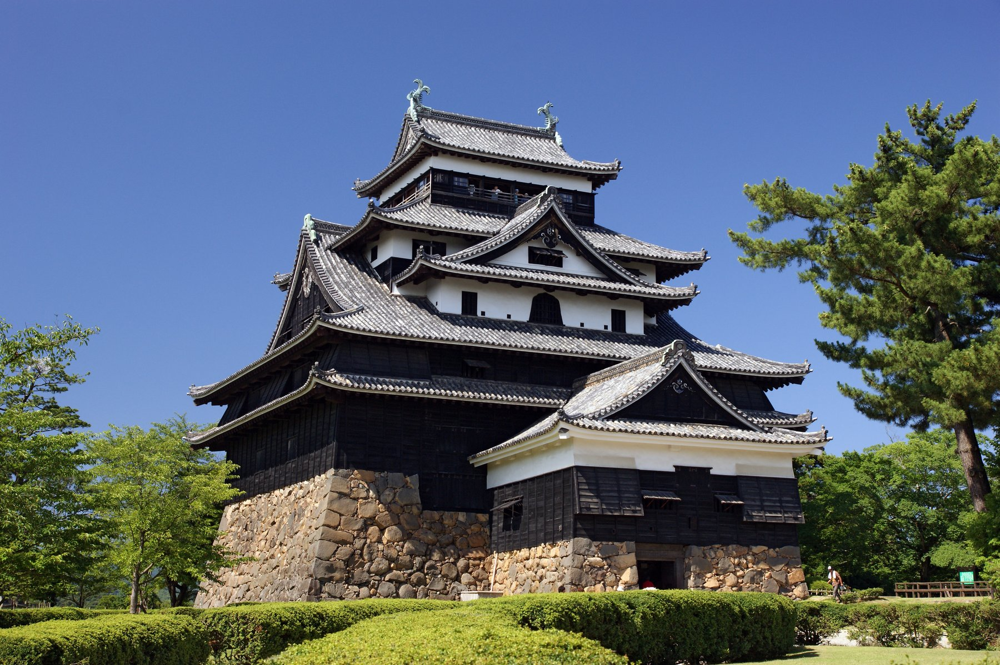
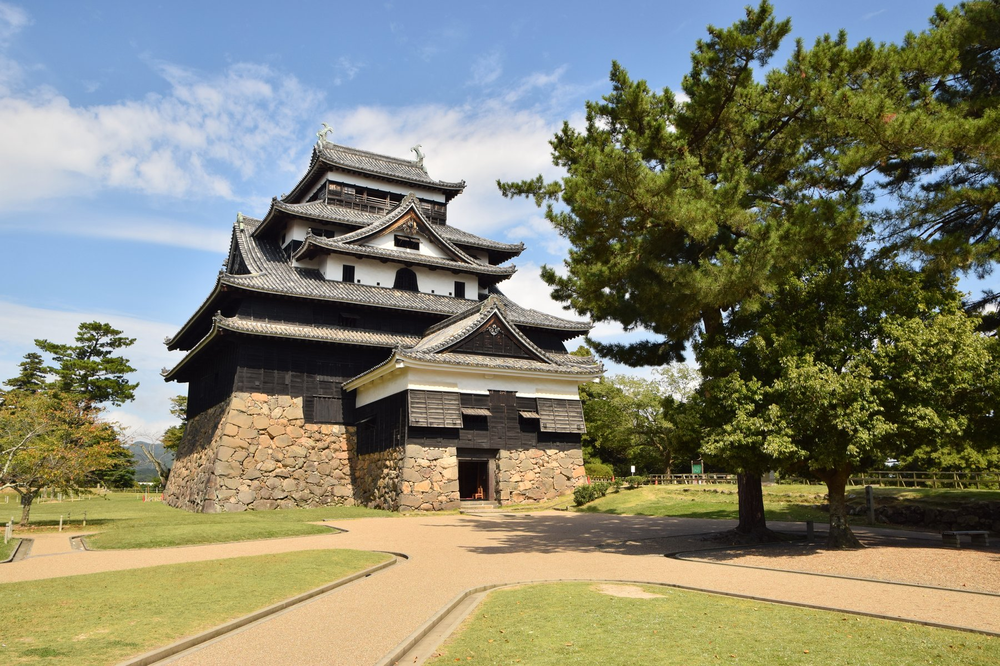
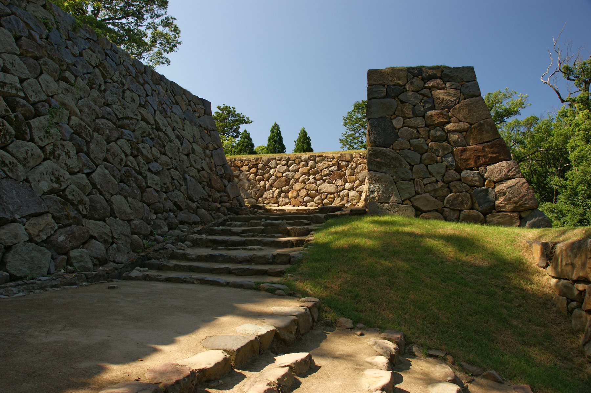
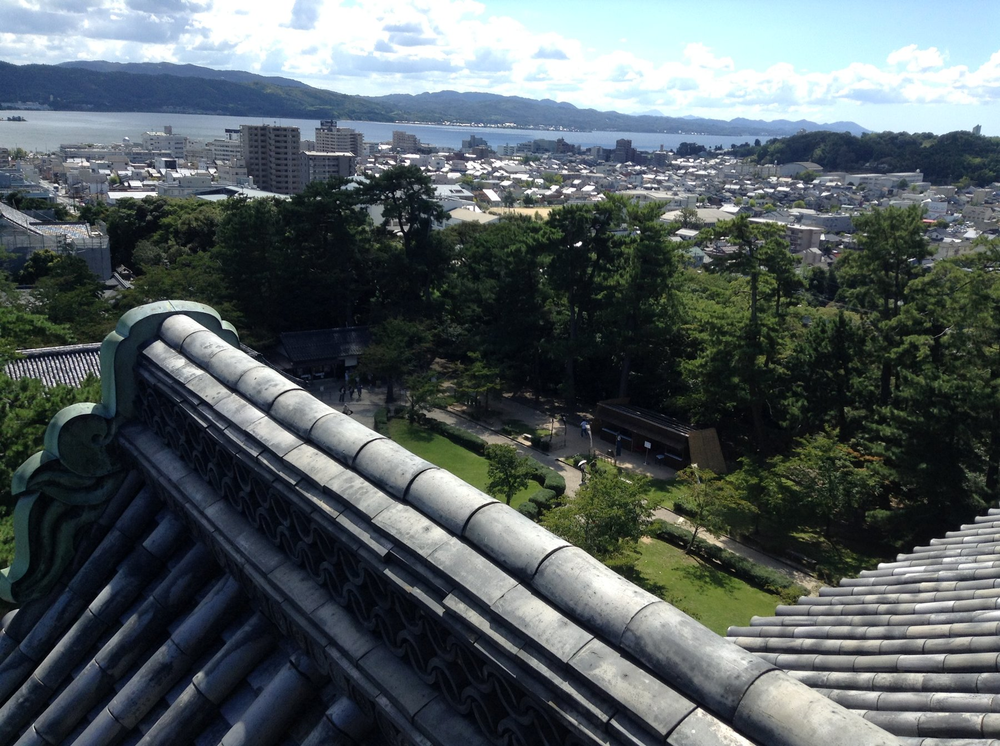
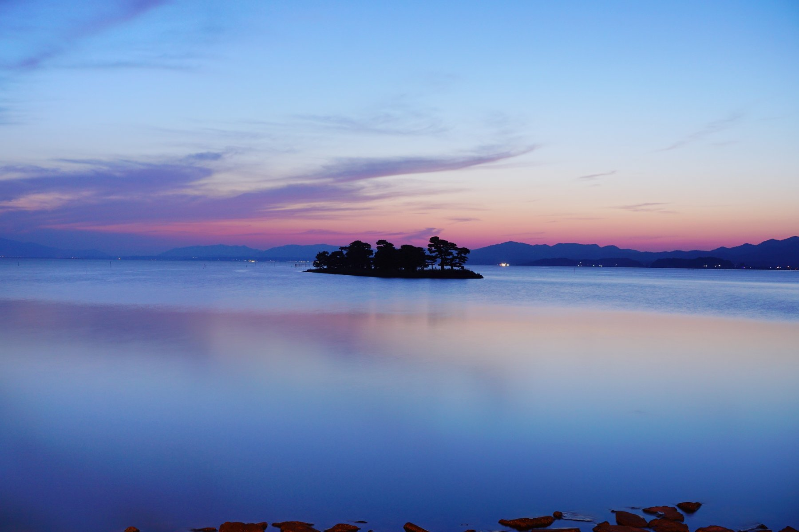
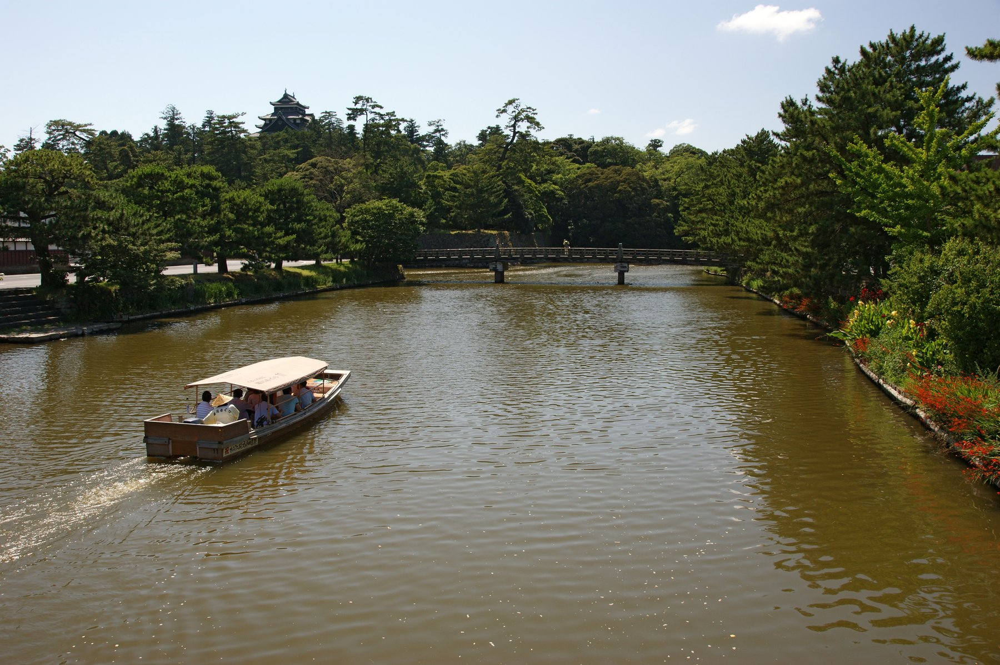
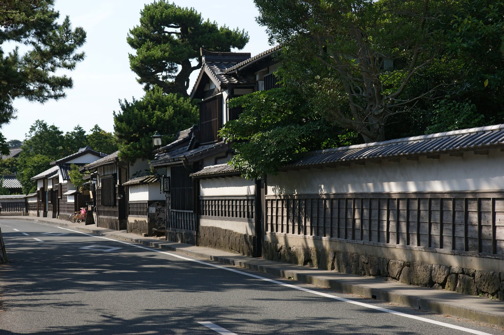
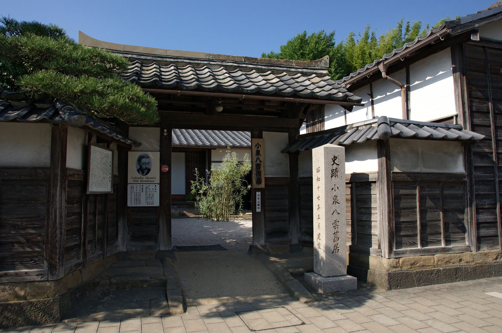

A single wooden tablet gave the keep its National Treasure status back —
sixty-three years after it was taken away.
A guide to the black-walled castle that outlasted two auctions and a demotion.
Admission fees, opening hours and access arrangements described in this book are subject to change.
Always check the official website for the latest information before visiting.
Matsue Castle official site: https://www.matsue-castle.jp/
| Name | Matsue Castle (Matsue-jo) — also known as Chidori-jo, the Plover Castle |
|---|---|
| Location | 1-5 Tonomachi, Matsue, Shimane Prefecture |
| Type | Architecture — castle and keep |
| National Treasure | Designated 1935; downgraded to Important Cultural Property in 1950; re-designated a National Treasure in 2015 |
| The keep | Four roofs, five floors over a basement, tower type; about 30m tall measured from the main bailey, or about 22.4m from the top of the stone base |
| Founded | Completed in 1611, a date confirmed by a wooden dedication tablet found inside the keep |
| Present form | An original keep, preserved as built |
| Official site | https://www.matsue-castle.jp/ |
Matsue holds the most recent National Treasure designation of the five — not because the castle changed, but because the proof of its age took a century to surface. That story, and the black, unornamented keep it concerns, are what this book is about.
Matsue Castle was built by Horio Yoshiharu and his son Tadauji. Yoshiharu served all three of Japan’s great unifiers — Oda Nobunaga, Toyotomi Hideyoshi and Tokugawa Ieyasu — and was ranked among Hideyoshi’s three senior elders. When Tadauji distinguished himself at the Battle of Sekigahara, the Horio were granted the 240,000-koku domain of Izumo and Oki, and chose a hill called Kameda-yama on the shore of Lake Shinji as the site for their new castle.
Construction continued under Yoshiharu after Tadauji’s sudden death, and the keep was completed in 1611. That date is not a matter of tradition: it was confirmed by a dedication tablet, discovered inside the keep, recording the exact date of completion. Yoshiharu himself died that same year.
The Horio line ended when the third lord, Tadaharu, died without an heir in 1633, and the domain was confiscated. His successor, Kyogoku Tadataka, died only three years later, also without an approved heir, and the domain was confiscated a second time. In 1638, Matsudaira Naomasa, a grandson of Tokugawa Ieyasu, was installed as lord — and the Matsudaira family governed Matsue domain for ten generations, down to the Meiji Restoration.
Under the Meiji abolition of castles (1873), Matsue’s keep was put up for sale, and a buyer was found at 180 yen — at a time when a single sack of rice cost roughly 3 yen. The keep stood ready for demolition.
What saved it was two local men, the wealthy farmer Katsube Honuemon and the former domain retainer Takagi Gonpachi, who pooled their own money, matched the sale price, and bought the keep back for the city.
Himeji sold at auction for a token sum; Hikone came within a hair of demolition. Matsue was literally bought back by private citizens. Most of the five National Treasure castles survive today because local people acted — not because the government chose to preserve them.
Matsue’s keep was designated a National Treasure in 1935, under the old National Treasures Preservation Law. When the Law for the Protection of Cultural Properties replaced it in 1950, the designation was reclassified downward to Important Cultural Property.
The turning point came in 2012, when a dedication tablet was rediscovered at Matsue Shrine, inscribed with a date corresponding to the fifteenth day of the first month of Keicho 16 (1611). Combined with structural surveys of the keep’s timber, the tablet supplied the documentary proof that had been missing, and in 2015 the keep was re-designated a National Treasure — sixty-three years after losing the title. Of the five, Matsue carries the most recent designation, and it exists because of exactly this kind of research.
The tablet that settled the matter is not on public display inside the keep, but its story — and the near sale of the castle itself — are two pieces of Matsue’s history worth knowing before you climb the stairs.

Where Himeji and Hikone are finished in white lime plaster, Matsue’s keep is clad in black board siding, giving it a heavier, more severe presence. A plover-shaped gable on the roof gave the castle its alternate name, Chidori-jo, the Plover Castle. The restrained, almost undecorated exterior carries the tension of a castle built while the age of war was still fresh.
One of Matsue’s most distinctive features is a well built into the keep itself. Designed for a siege, similar wells were installed at Nagoya Castle and Hamamatsu Castle as well — but Matsue’s is the only one that survives today. It was originally 24 metres deep; roughly half of that has since been filled in. Few details make the keep’s war-footing as plain as this single, still-visible well.
The stone base beneath the keep uses a technique called gobo-zumi, which produces an unusually strong, slow-to-collapse structure. Timber was in short supply when the castle was built, so the builders dispensed with a single central pillar and instead joined shorter posts, each spanning two floors, to carry the weight of the keep. Of the 308 pillars supporting the structure, 96 are these joined through-posts, and 130 more are wrapped in thin cladding boards (tsutsumi-ita) to disguise splits and knots in the wood. The keep is, in effect, a record of working around a shortage of good material.

The entrance to the keep is guarded by an attached turret (tsuke-yagura), built on a stone base one level lower than the keep itself; its basement includes a firing platform (ishiuchi-dana) for striking at attackers from below. The top floor of the keep, by contrast, is an open gallery ringed only by a handrail — no walls at all — giving a 360-degree view in every direction.
| Plan | Time | What you see |
|---|---|---|
| Keep only | About 1 hour | Otemae to the main bailey to the keep |
| Standard | 2–3 hours | The keep plus a boat tour of the moat |
| Unhurried | Half a day | All of the above plus Shiomi Nawate and the samurai residences |
The stairs inside the keep are steep throughout — wear shoes you can climb comfortably in. On a clear day, the view from the top floor, “Tengu-no-ma,” reaches all the way to Lake Shinji.

The well two floors below, the open gallery up here — between them, the keep sums up its whole character: built to survive a siege, and finished with a view that has nothing to do with war at all.
| Admission | 1,200 yen for adults; free for primary and middle school students (revised July 2026) |
|---|---|
| Open | Hours vary by season |
| Access inside | Open year-round; the interior of the keep can be visited |
| Official site | https://www.matsue-castle.jp/ |
Fees and hours change. Please check the official website before you travel.
| Nearest station | JR Matsue Station |
|---|---|
| By bus | The Matsue Lakeline loop bus from bus stand 7 on the station’s north side to “Matsue Castle (Otemae),” about 10 minutes (210 yen one way for adults), then about 8 minutes on foot |
| On foot | About 25 minutes from the station |
| By car | Paid car parks nearby |
| Spring | Cherry blossom on the castle hill set against the black keep |
|---|---|
| Summer | A boat tour of the moat — cool water views of the castle from below |
| Autumn | The finest season for a stroll through the castle town, and for the sunset over Lake Shinji |
| Winter | Clear air extends the view from “Tengu-no-ma” on the top floor |

A boat tour of the moat is Matsue’s signature way to see the castle from a different angle, and Shiomi Nawate, the old samurai quarter along the northern moat, is the most complete castle-town street left in the city.



The house sits along the same street as the samurai residences, a short walk from the castle. A museum dedicated to Hearn stands nearby, covering his life in Matsue and his writing on Japan for an English-speaking readership more than a century ago.
The photographs in this book are used under public domain dedications, CC0, or Creative Commons Attribution licences. Copyright in each photograph remains with its photographer or rights holder.
CC BY 2.0: https://creativecommons.org/licenses/by/2.0/
CC BY 2.5: https://creativecommons.org/licenses/by/2.5/
CC BY 3.0: https://creativecommons.org/licenses/by/3.0/
CC BY 4.0: https://creativecommons.org/licenses/by/4.0/
Admission fees, opening hours and access arrangements are subject to change. Always check the official website of each site before visiting. The information here reflects the time of writing, and no guarantee is made as to its accuracy or completeness.
The Five National Treasure Castles, Volume Five
Only five castle keeps in Japan are designated National Treasures:
Himeji, Matsumoto, Inuyama, Hikone and Matsue. This series visits each of them in turn.